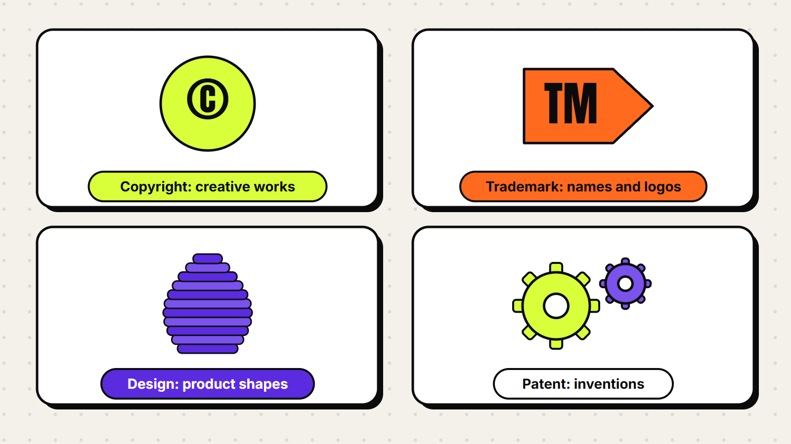
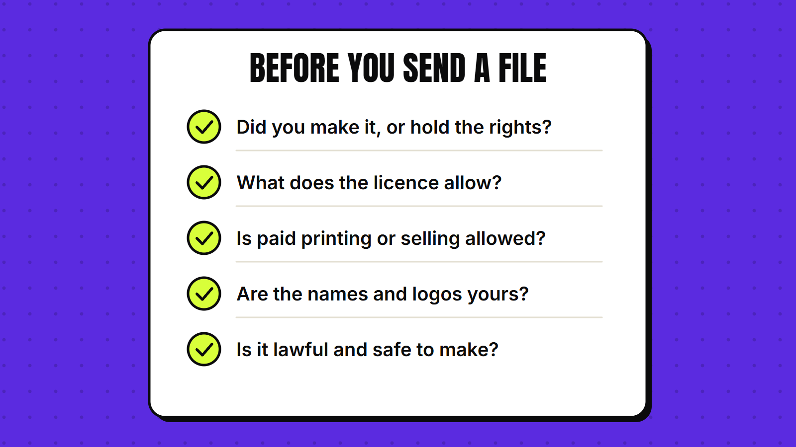

A 3D printer can reproduce a shape quickly, but the right to reproduce it is a separate matter. Downloaded models, famous characters, logos, and existing products may all belong to someone. Knowing the basics protects you and the creators. This guide is general information, not legal advice. For a business decision or a dispute, speak to a qualified lawyer.

| Right | Broadly protects | Example question |
|---|---|---|
| Copyright | Original artistic and creative works | Who made this sculpture or drawing? |
| Trademark | Names, logos, and signs identifying a business | Does it carry a brand mark? |
| Registered design | The appearance of a product | Is this shape registered? |
| Patent | New inventions and how they work | Is the mechanism protected? |
How each applies depends on the country and the facts.
A free download is not free of conditions. Model libraries show a licence with each file. Common terms include:
Paying a service to print a model can count as commercial use under some licences. When unsure, ask the creator in writing and keep the reply.
Film, game, and cartoon characters, team crests, and company logos are usually protected. Owning a toy or a poster does not give the right to reproduce it. Fan-made models do not remove the original owner's rights. We print original designs and files you own or may use, and we do not print licensed characters without written permission.
Replacing a broken clip for your own item is a common wish. Still, some parts may be protected, and brand marks should not be reproduced. Safety-related parts should come from the original maker.

Weapons and weapon parts, items meant to bypass locks, and other illegal objects are refused. Medical devices and food-contact claims need certified production. See the file and rights terms.
When someone designs for you, ownership does not automatically move to you in every situation. Put it in writing: whether you receive full ownership or a licence to use, where, and for how long. For commercial products, take legal advice.
Tip: Save a copy or screenshot of the licence on the day you download a model. Web pages change.
Creators who see their work credited and used within the terms are more likely to keep sharing. Many welcome a polite request for wider use, and some offer a commercial licence for a modest arrangement. If a creator says no, choose another design or commission an original one. An original piece takes more planning, yet it is truly yours to use, adjust, and sell on the terms you agree. It also avoids the risk of having a listing removed or a batch left unusable after the money is spent. When in doubt, pause and ask before printing.
Not automatically. Some licences and some laws treat private copies differently from sales, and the answer depends on the facts. Check the licence, and take advice when it matters.
Usually not on its own. A modified version can still depend on the original, and some licences forbid publishing changes at all.
No, unless the creator gives separate permission. Ask in writing and keep the answer.
It depends on the written agreement. State whether ownership transfers or you receive a licence, and have important agreements checked by a lawyer.
Save evidence with dates, check the platform's reporting process, and speak to a qualified professional about the options.
A studio may decline a job because rights are unclear, a brand mark appears, or the object could cause harm. That is not a judgement about you. Share the licence or written permission if you have it, ask what could be changed, or commission an original design that serves the same purpose without borrowing anyone else's work.
If you want something original instead, our design service can create it from your idea. To order from a file you are allowed to print, use the quote form. Beginners can also learn to model their own designs.